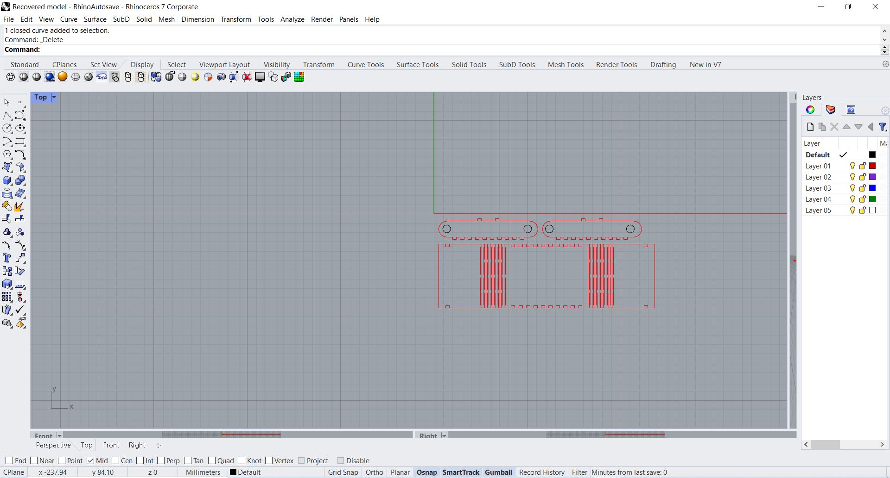
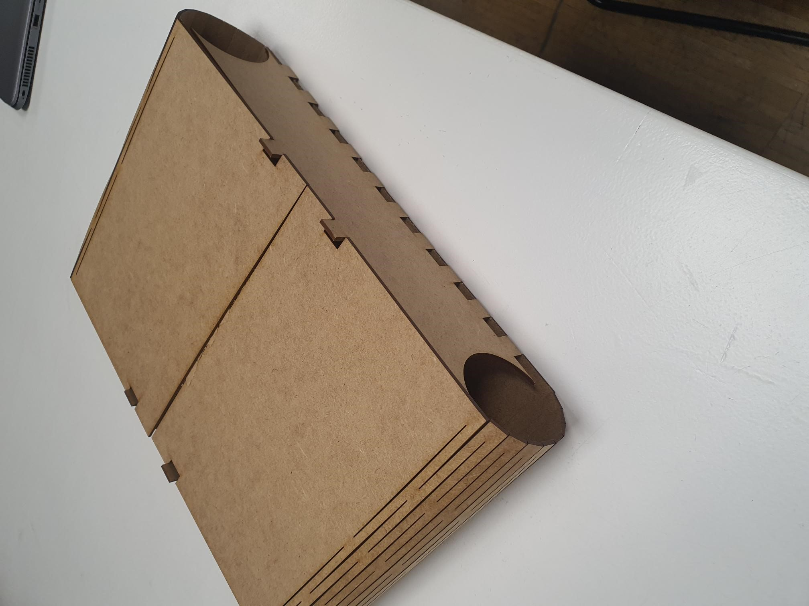

This week we delve into the use of computer aided manufacturing, learning about laser cutting processing. Laser cutting is an effective way to engrave and cut detailed artifacts and artwork. The cutter uses mirrors and a powerful lazer beam to make continuous cuts on a material laid flat on the bed of the machine. There are 3 functions of a laser cutter: cut, engrave and mark. A method I learnt this week is nesting: file optimization to reduce material waste, done by organizing the cut parts in the most efficient way. For the week, it was also exciting to learn about bending and kerfing, methods of cutting wood material. Kerf is defined as the width of material that is removed by a cutting process. I decided to implement this to make a curved texture to my artifact this week.
Some properties to be considered when cutting material:
Task: Designing a box using parametrics
For my assignment this week I decided to model and cut a simple box using parameters in Fusion 360. Used for mainly modeling mechanical parts. To set up the parameters of the box, I went to commands: Modify > Change parameters. A chart popped up that I assigned values to. Then from this, the sides of the box can be defined and changed. After tjat process I booked a slot for the lazer cutter machine, set up the line colours (red black blue) and cut the file according to its parameters

Examples of commonly used parameters:
